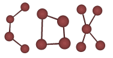

|

Introduction
Project Reference
Programmers Reference
Changelog
Agenda
Libraries
Bibliography
| |
The Chemistry Development Kit Homepage
-
(12. Feb. 2001) The CDK now has its own SourceForge project
(http://sourceforge.net/projects/cdk)
-
(11. Feb. 2001) The 2D chemical editor
JChemPaint,
just released as version 1.0, will now be ported to the CDK.
-
(06. Feb. 2001) New page design based on Norm Walsh's website dtd
|